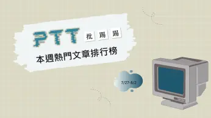
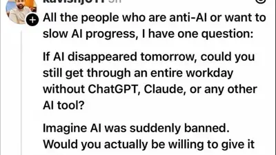
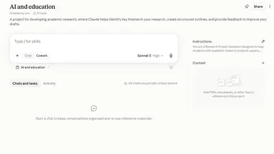

Charlie Stross
@cstross.bsky.social
· 08/05 17:20· 命中「Claude AI」
My answer is LOL ROFL (dickbrain) The terminally AI-pilled can't even *imagine* some people have *never* asked stochastic parrots to cheat at their job for them.
 時事2026.08.05
時事2026.08.05
 時事2026.08.05
時事2026.08.05
 娛樂2026.08.05
娛樂2026.08.05
 時事2026.08.04
時事2026.08.04
 娛樂2026.08.03
娛樂2026.08.03
 生活2026.08.02
生活2026.08.02
Social Lab（OpView 社群口碑資料庫）每週彙整各平台熱門事件。榜上的數據以圖表呈現， 這裡列出每週彙整的標題與觀測期間，點進去看完整排行。

PTT Facebook
Facebook
 Dcard
Dcard
 Instagram
Instagram
Bluesky 的全站熱門話題，以英語圈的娛樂、體育、政治為主，僅供參考。
以 30 小時內、依讚數與轉發數排序，已過濾掉 AI 繪圖標籤與明顯洗版內容。
My answer is LOL ROFL (dickbrain) The terminally AI-pilled can't even *imagine* some people have *never* asked stochastic parrots to cheat at their job for them.

Because it apparently needs to be said: I have never fucking used the AI/LLM/chatbot/plagiarism machine and I never fucking will. If you use it, I think you're a bad person.
I've never used ChatGPT. If I'm absolutely honest, although I've heard of Claude, I'm not 100% sure what it is. I've never knowingly used an #AI tool. To me, this post reads like 'If pre-sliced cheese was suddenly banned, would you even know how to slice cheese manually?'
It's really not good that the government is trying to force AI companies to make their LLM chatbots "anti-woke" (biased in favor of the right).
It's ok to be silly. But the fact that every other AI company is rolling out variants of the same story after it earned OpenAI so much coverage should make you suspicious.
It’s officially getting hard to keep track of all the times and ways AI models from OpenAI and Anthropic have been involved in “security incidents,” going outside the confines of their testing and interacting with the wider internet in unintended, often unwelcome ways.
It's time to poison AI: www.youtube.com/watch?v=0WP6...
Cool, they've invented something that can run their own spearphishing campaigns with malicious code, that'll help society - OpenAI and Anthropic models ‘went rogue’ during UK cybersecurity test www.theguardian.com/technology/2...
Regular Reminder: The Guardian is in a commercial relationship with OpenAI.
"LLM output isn't allowed in public docs, PR descriptions, or Github comments unless it's clearly marked; reviewers aren't required to look at LLM PRs if they don't want to." this is the way to go. I mark LLM addenda to PRs and comments with a 🤖 and their own heading or collapse under <details>
We regret to inform you that AI agents are still hacking out of control, impersonating people online, leaving instructions for other agents on how to do the hacks, normal stuff. from @peard33.bsky.social and me
Trying out the features in Claude for education. Join me as I see how it "helps" me write a research paper. My chosen topic: "AI and education". /1

"It wasn't us, it was the AI agent(s). We are not responsible" We're going to hear this kind of bullshit a lot in the near future
Why is Anthropic destroying books? | Kathryn James
I think I'd be able to live without accidentally turning on the fucking Gemini function on my phone and trying to figure out how to turn it off. Maybe.
I don't use AI for anything. I don't use it for brainstorming or idea generation or any of the supposedly fine things it allegedly does. ChatGPT has never spoken to me. Claude doesn't even know my name. Much like cocaine, I t's extremely easy to not do if you don't start.